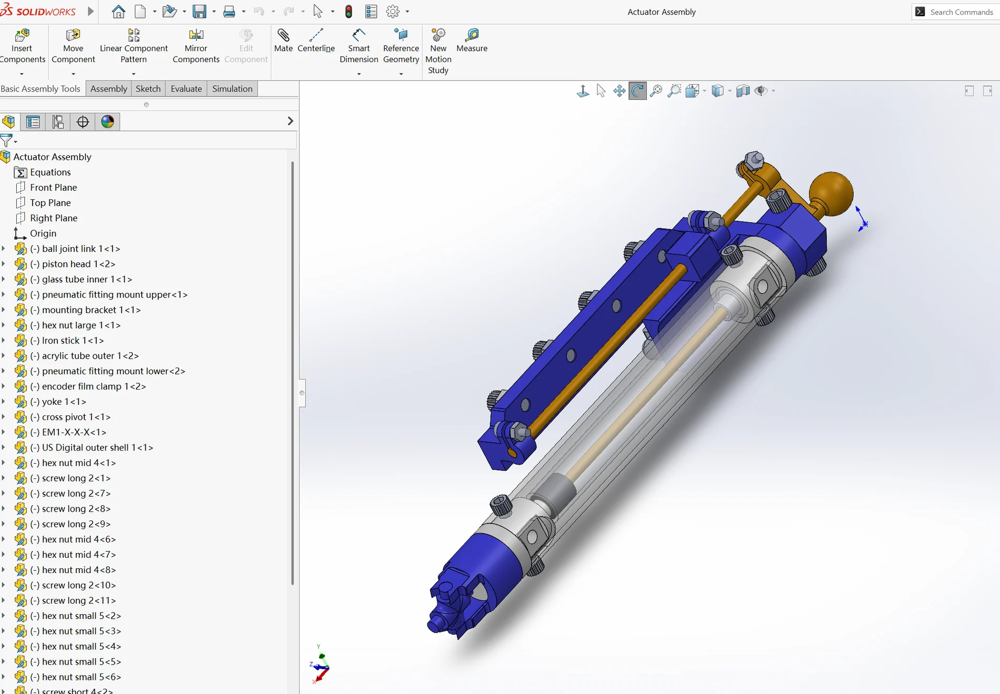

BioMedical Mechatronics Lab · Georgia Tech · January 2026–present
MRI-Compatible Needle Intervention
Mechanical architecture for a modular image-guided needle-placement platform, developed around patient fit, constrained workspace, actuator packaging, manufacturability, and MRI-compatible system requirements.
- Role
- Mechanical design and prototyping
- Tools
- SolidWorks · rapid prototyping
- Domain
- Surgical and medical robotics
- Status
- Research prototype development

Mechanism development
- Iterated modular platform architecture, patient-conforming fixture concepts, and needle insertion and tilt mechanisms.
- Evaluated lead-screw and gear transmission concepts, actuator linkages, pivot geometry, ball-joint interfaces, and removable insertion modules.
- Reserved interfaces for sensing, image guidance, and later closed-loop control while keeping subsystems replaceable.
- Used rapid-prototyped components and CAD reviews to assess packaging, assembly, manufacturability, and integration.
Primary constraints
The mechanism must fit around the patient and imaging workflow, provide useful angular and insertion range, remain serviceable, and avoid design choices incompatible with the MRI environment. These constraints drive the architecture before actuator optimization or control development.
Current boundary: the documented contribution is mechanical design and system architecture. Image guidance and autonomous needle placement remain future integration work.
Evidence
CAD assemblies
Full platform and isolated actuator geometry are available as lightweight browser models.


Back / P-01